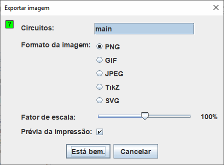

Exportar imagem
Ao selecionar | Exportar imagem ... |, o Logisim exibirá uma caixa de diálogo com quatro opções:

Configurar exportação
- Circuitos: Uma lista onde você poderá selecionar um ou mais circuitos que deverão ser exportados em arquivos de imagem. (Circuitos em branco não serão exibidos como opções.)
- Formato da Imagem: Você poderá criar PNG, GIF, JPG, TikZ e SVG. Recomendamos os arquivos PNG. O formato GIF é bem antigo, e no formato JPEG poderão ser introduzidos outros elementos na imagem, uma vez que esse formato é realmente mais significativo para imagens fotográficas.
- Fator de escala: Você poderá dimensionar as imagens que serão transferidas para os arquivos de imagem usando esse controle.
- Prévia da impressão: Muda o estilo da imagem produzida com a informação de estado ou apenas o esquema.

Esta opção também está disponível em preferências de aplicação no separador layout. Isto irá alterar a exibição na área de trabalho.
Após clicar em Está bem. , o Logisim irá mostrar uma janela de seleção de arquivos em caixa de diálogo. Se você já tiver selecionado um circuito, indicar então o arquivo no qual a imagem deverá ser colocada. Se você tiver selecionado vários circuitos, escolher uma pasta (diretório) onde os arquivos deverão ser colocados; o Logisim providenciará os nomes das imagens com base nos nomes dos circuitos ( main.png , por exemplo).